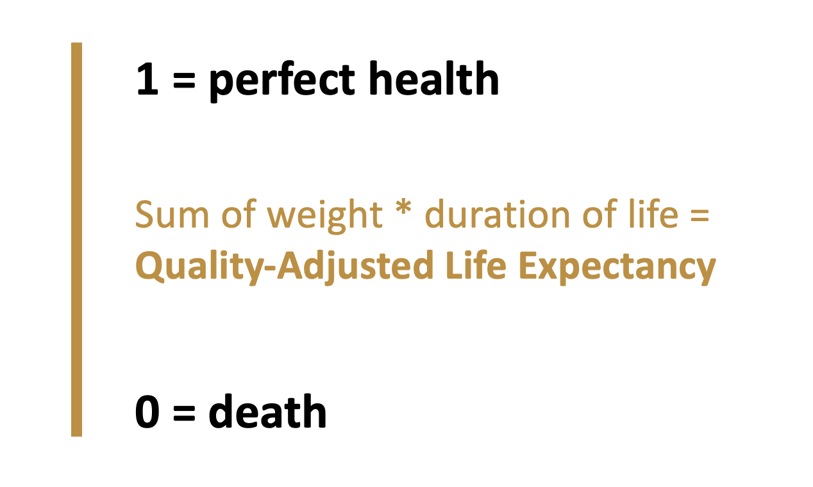
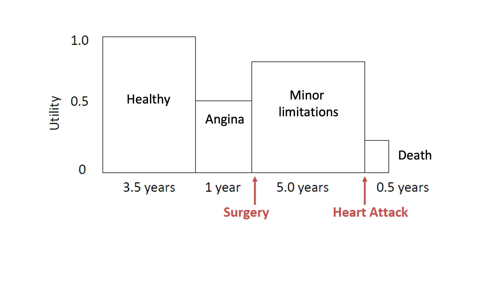
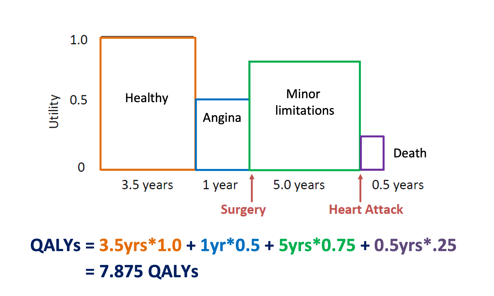
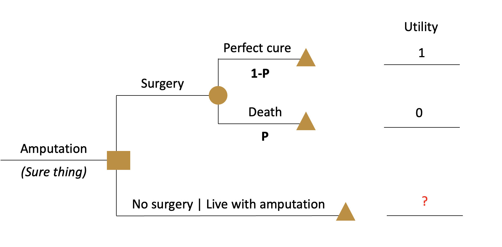
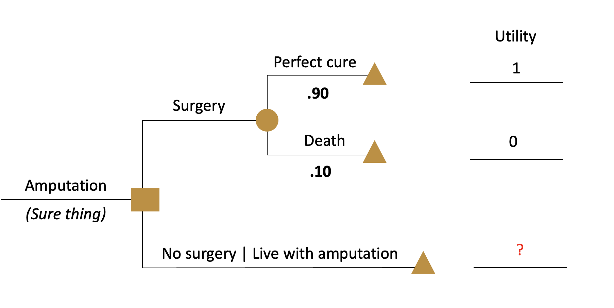
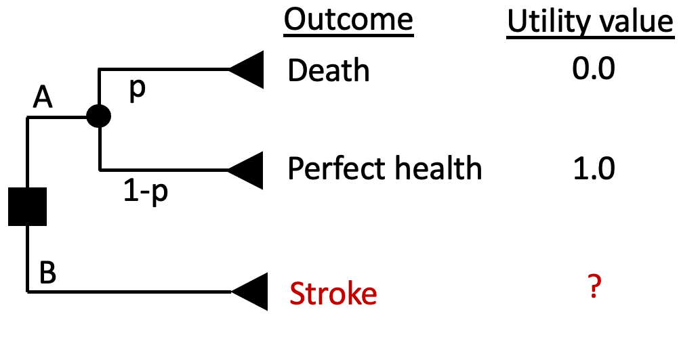
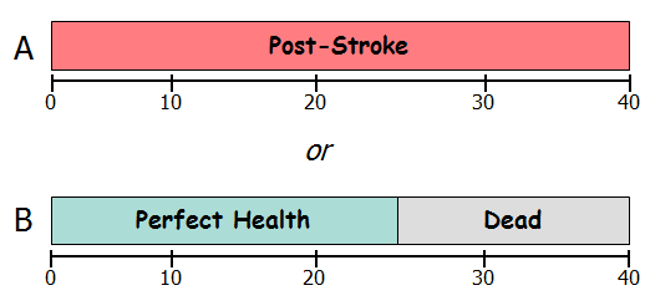
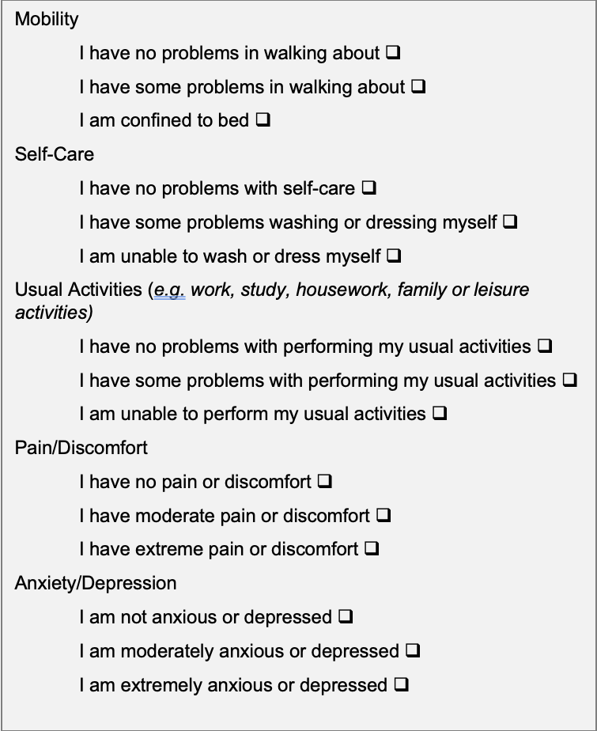

Fundamentos del CEA: Valoración de los resultados sanitarios
Objetivos de aprendizaje y esquema
Objetivos de aprendizaje
Comprender los conceptos de medidas resumidas de la salud, en concreto años de vida ajustados por calidad (AVAC)
Describir las diferencias generales entre los métodos directos e indirectos para estimar las utilidades del estado de salud
Seleccionar los parámetros del modelo para cuantificar los “beneficios” (el denominador en la RCEI)
Esquema
- Valoración de los resultados sanitarios: AVAC/AVAD
- Pesos de utilidad / instrumentos
- Dónde obtener valores
Revisión RCEI
\frac{C_1 - C_0 \quad (\Delta C)}{E_1 - E_0 \quad (\Delta E)}
Numerador (costos)
Valorados en términos monetarios
- Por ejemplo,
$USD / ₦NGN / KES / R
Denominador (beneficios):
Valorado en términos de resultados clínicos.
- Por ejemplo,
# de casos de VIH prevenidos
# de niños sin convulsiones
# de años de vida ajustados por calidad ganados
- Lo importante para la cuestión que nos ocupa
- La mayoría de los análisis reportan varios resultados diferentes
- Los AVAC/AVAD permiten la comparación entre áreas de enfermedad
Valoración de los resultados sanitarios
¿Por qué medidas de salud resumidas?
Tanto los AVAC como los AVAD proporcionan una medida resumida de la salud
Permiten comparar el nivel de salud y la carga de morbilidad
Entre enfermedades
Entre poblaciones
A lo largo del tiempo, etc.
AVAC
Origen: economía del bienestar
- Utilidad = medida holística de satisfacción o bienestar
Con los AVAC, hay dos dimensiones de interés
duración de la vida (medida en años de vida)
calidad de vida (medida por el peso de la utilidad, normalmente entre 0 y 1)
AVAC
AVAC: métrica que refleja tanto los cambios en la esperanza de vida como en la calidad de vida (dolor, función o ambos)
AVAC
Ejemplo: Paciente con cardiopatía coronaria (con cirugía)
Fuente: Harvard Decision Science
Ejemplo: Paciente con cardiopatía coronaria (con cirugía)
Ejemplo: Paciente con cardiopatía coronaria (sin cirugía)

Ejemplo: Paciente con cardiopatía coronaria
- Con cirugía 7,875 AVAC
- Sin cirugía 6,625 AVAC
- Beneficio de la intervención quirúrgica:
En AVAC: 7,875 – 6,625 AVAC = 1,25 AVAC
En años de vida 10 años – 10 años = 0 AVAC
Pesos de utilidad – ¿Cómo se obtienen?
Los pesos de utilidad para la mayoría de los estados de salud están entre 0 (muerte) y 1 (salud perfecta)
Métodos directos
Apuesta estándar
Intercambio de tiempo (“time trade-off”)
Escalas de valoración
Métodos indirectos:
EQ-5D
Otros instrumentos de utilidad: SF-36; Índice de Utilidad para la Salud (HUI)
Métodos directos: Apuesta estándar
“¿Qué riesgo de muerte aceptaría para evitar [vivir el resto de su vida con una pierna amputada] y vivir su vida en perfecto estado de salud?”

Métodos directos - Apuesta estándar
“¿Qué riesgo de muerte aceptaría para evitar [vivir el resto de su vida con una pierna amputada] y vivir su vida en perfecto estado de salud?”
- Encuentre el umbral p que establece EV(A) = EV(B)
- Supongamos que el encuestado responde que le es indiferente A y B en un umbral de pMuerte = 0,10
- Entonces U(Amputación) = p*U(Muerte) + (1-p)*U(Salud perfecta) = 0,10*0 + (1-0,10)*1 = 0,9 = umbral de indiferencia entre operarse y no operarse (viviré con esto en vez de tener un alto riesgo de morir”***)
Métodos directos - Apuesta estándar
“¿Qué riesgo de muerte aceptaría para evitar [vivir el resto de su vida con una pierna amputada] y vivir su vida en perfecto estado de salud?”
Métodos directos - Apuesta estándar
“¿Qué riesgo de muerte aceptaría para evitar [vivir con derrame cerebral el resto de su vida] y vivir el resto de su vida en perfecta salud?”

¿Qué tan malo es tener un derrame cerebral?
- Como resultado de un derrame cerebral, usted
- Tiene impedido el uso del brazo y la pierna izquierdos
- Necesita ayuda para bañarse y vestirse
- Necesita un bastón u otro dispositivo para caminar
- Experimenta dolor leve algunos días a la semana
- Puede trabajar, con algunas modificaciones
- Necesita ayuda para hacer compras, las tareas domésticas y los recados.
- A veces se siente ansioso y deprimidoMétodos directos - Apuesta estándar
“¿Qué riesgo de muerte aceptaría para evitar [vivir con derrame cerebral el resto de su vida] y vivir el resto de su vida en perfecta salud?”
- Encontrar el umbral p_T que establece EV(A) = EV(B)
- Supongamos que el encuestado responde que le es indiferente A y B en un umbral p_T = 0,2.
- Entonces U(Accidente cerebrovascular) = p_T*U(Muerte) + (1-p_T)*U(Salud perfecta) = 0.2*0 + (1-0.2)*1 = 0.8
Métodos Directos - Time Trade-Off (TTO)
Una alternativa a la apuesta estándar
En lugar del riesgo de muerte, el TTO utiliza el tiempo de vida para valorar los estados de salud
No implica incertidumbre en las elecciones
La tarea puede resultar más fácil para algunos encuestados que la apuesta estándar
Métodos Directos - Time Trade-Off (TTO)
“¿A qué parte de su esperanza de vida actual de 40 años renunciaría para mejorar su estado de salud actual (derrame cerebral) hasta alcanzar la”salud perfecta”?

U(Post-derrame cerebral) * 40 años = U(Salud perfecta) * 25 años + U(Muerto) * 15 años
U(Después de la apoplejía) * 40 años = 1 * 25 años + 0 * 15 años
U(Después de la apoplejía) = 25/40 = 0,625
Apuesta estándar (AE) vs TTO
La AE representa la toma de decisiones bajo incertidumbre; la TTO es la toma de decisiones con certeza
La TTO podría captar la preferencia temporal (es decir, podríamos valorar menos la salud en el futuro que hoy), en lugar de valorar únicamente los estados de salud en el futuro.
La postura ante el riesgo se recoge en la AE (aversión al riesgo de muerte), pero no en la TTO
Los valores de utilidad de la AE suelen ser superiores a los de la TTO para el mismo estado.
Métodos directos: Escalas de valoración
“En una escala en la que 0 representa la muerte y 100 representa la perfecta salud, ¿qué número diría que describe mejor su estado de salud durante las últimas 2 semanas?”
- Problema: No tiene la propiedad de intervalo que deseamos
- Un valor de “90” en esta escala no es necesariamente el doble de bueno que un valor de “45”.
Escala visual analógica (EVA)
La escala visual analógica (EVA) es una escala de valoración muy utilizada.
Fuente: https://assessment-module.yale.edu/im-palliative/visual-analogue-scale](images/paste-B88DC3D6.png){alt=“Fuente: https://assessment-module.yale.edu/im-palliative/visual-analogue-scale”}
Métodos directos: Escalas de valoración
- Fáciles de utilizar: Las escalas de valoración suelen utilizarse cuando el tiempo o la capacidad cognitiva/alfabetización impide el uso de otros métodos
- Muy subjetivos y propensos a respuestas extremas. Generalmente, utilidades para EVA < TTO < AE
Cuestión práctica: vigilar a los “tramposos”
Ejemplo hipotético de “trampa”:
La compañía farmacéutica X ha descubierto un medicamento que previene la diabetes pero causa migrañas (efecto secundario)
Utilizan la EVA para estimar la utilidad de la diabetes en su modelo de decisión y la AE para estimar la utilidad de las migrañas.
¿Hay algún problema? (¡sí, lo hay!)
Recordemos que, por lo general, la utilidad de la EVA es menor que la de la TTO y menor que la de la AE.
Por lo tanto, este enfoque exagera el beneficio del tratamiento al utilizar una U(Diabetes) más baja y U(migrañas) más alta
Métodos indirectos: EQ-5D
Sistema de descripción de estados de salud
5 dominios: movilidad; autocuidado; actividades habituales; dolor/malestar y ansiedad/depresión
3 niveles: 243 estados de salud distintos (por ejemplo, 11223)
Valoraciones obtenidas mediante encuestas poblacionales con VAS, TTO

Métodos indirectos
MEDIDAS INDIRECTAS DE UTILIDAD
- HUI - Índice de utilidad para la salud
- EQ5D - Medida del estado de salud EuroQol
- SF-6D - Convierte las puntuaciones SF-36 y SF-12 en utilidades
- QWB - Escala de calidad del bienestar
Métodos indirectos
PRECAUCIÓN -
Es posible que vea artículos / estudios que informan de medidas de calidad de vida “NO BASADAS EN PREFERENCIAS” (por ejemplo, que miden la carga, la “calidad de vida”, los síntomas; normalmente no en una escala de 0 a 1), que a menudo informan de “puntuaciones de resumen”, pero éstas NO SON LO MISMO que medidas BASADAS EN PREFERENCIAS (por ejemplo, cómo valora uno los diferentes estados de salud)
Medidas específicas de la enfermedad
Más sensibles a los cambios en una enfermedad concreta
Desventajas -
Muchas personas tienen múltiples condiciones de salud
No se puede transferir a QALY/Utilidad a menos que se mapee estadísticamente a medidas generalizadas (EQ5D, etc.)
¿Números estándar para sus propias ACE?
- Estudios de utilidad a gran escala
- Equilibrio entre diferentes medidas - Análisis de sensibilidad
- Registro de ACE de Tufts
- Junto con los ensayos controlados aleatorios
AVAD
Historia de origen: Estudio sobre la carga de enfermedad mundial
Deliberadamente una medida de salud, no de bienestar/utilidad
Similar a los AVAC, dos dimensiones de interés:
duración de la vida (diferencias en la esperanza de vida)
calidad de vida (medida por el peso de la discapacidad)
AVAD
AVAD = AVP + AVD
- AVP (Años de vida perdidos)
- AVD (Años vividos con discapacidad)
DALYs = AVP + AVD
Años de vida perdidos (AVP): cambios en la esperanza de vida, calculados a partir de la comparación con la tabla de vida sintética
Ejemplo de AVP : El tratamiento del VIH retrasa la muerte de los 30 a los 50
Años de vida ganados = 20 años
¿AVP?
Tabla de vida sintética, de referencia
| Edad | Esperanza de Vida | Edad | Esperanza de Vida |
|---|---|---|---|
| 0 | 88.9 | 50 | 39.6 |
| 1 | 88.0 | 55 | 34.9 |
| 5 | 84.0 | 60 | 30.3 |
| 10 | 79.0 | 65 | 25.7 |
| 15 | 74.1 | 70 | 21.3 |
| 20 | 69.1 | 75 | 17.1 |
| 25 | 64.1 | 80 | 13.2 |
| 30 | 59.2 | 85 | 10.0 |
| 35 | 54.3 | 90 | 7.6 |
| 40 | 49.3 | 95 | 5.9 |
| 45 | 44.4 |
Fuente: http://ghdx.healthdata.org/record/ihme-data/global-burden-disease-study-2019-gbd-2019-reference-life-table
Sintético, Tabla de Vida de Referencia
| Age | Life Expectancy | Age | Life Expectancy |
|---|---|---|---|
| 0 | 88.9 | 50 | 39.6 |
| 1 | 88.0 | 55 | 34.9 |
| 5 | 84.0 | 60 | 30.3 |
| 10 | 79.0 | 65 | 25.7 |
| 15 | 74.1 | 70 | 21.3 |
| 20 | 69.1 | 75 | 17.1 |
| 25 | 64.1 | 80 | 13.2 |
| 30 | 59.2 | 85 | 10.0 |
| 35 | 54.3 | 90 | 7.6 |
| 40 | 49.3 | 95 | 5.9 |
| 45 | 44.4 |
Fuente: http://ghdx.healthdata.org/record/ihme-data/global-burden-disease-study-2019-gbd-2019-reference-life-table
DALYs = AVP + AVD
Años de vida perdidos (AVP): cambios en la esperanza de vida, calculados a partir de la comparación con la tabla de vida sintética
Ejemplo de AVP : El tratamiento del VIH retrasa la muerte de los 30 a los 50
Años de vida ganados: 20 años
AVAD: AV(50) - AV(30) = 39,6 - 59,2 = -19,6 AVAD = 19,6 AVAD evitados
Note
¡AVP (medidos como AVAD evitados) \neq Años de vida ganados!
DALYs = AVP + AVD
Años vividos con discapacidad (AVD): calculados de forma similar a los AVAC, peso de la utilidad ≈ 1 - peso de la discapacidad
Ejemplo de AVD: Control efectivo del asma durante 10 años
Peso de la discapacidad (asma no controlada) = ?
Peso de la discapacidad (asma controlada) = ?
Pesos de discapacidad
- Valores comunes para un pequeño conjunto de condiciones de salud con nombre (p. ej. VIH temprano/tardío, VIH/ART)
- Primera iteración: opinión de expertos
- Segunda iteración: Encuestas de población a domicilio en varias regiones del mundo (13.902 encuestados)
Comparación por pares de dos descripciones del estado de salud que empeoran
Regresión probit para calcular la ponderación de la discapacidad
235 estados de salud únicos
Fuente: Salomon, Joshua A., et al. “Disability weights for the Global Burden of Disease 2013 study”. The Lancet Global Health 3.11 (2015): e712-e723.](http://www.thelancet.com/journals/langlo/article/PIIS2214-109X(15)00069-8/fulltext)
AVAD = AVP + AVD
Años Vividos con Discapacidad (AVD): calculados de forma similar a los AVAC, peso de la utilidad ≈ 1 - peso de la discapacidad
Ejemplo de AVD: Control efectivo del asma durante 10 años
Peso de la discapacidad (asma no controlada) = 0,133
Peso de la discapacidad (asma controlada) = 0,015
AVD = 10 * 0,015 - 10 * 0,133 = -1,18 AVADs= 1,18 AVADs evitados
AVAD para ACE
- El método de cálculo recomendado ha cambiado con el tiempo (ponderación por edad, descuento, ahora sin ambos)
- Algunos calculan un AVAD “similar al AVAC”, utilizando la ponderación de utilidad = 1- peso de la discapacidad
- En general, el descuento se sigue realizando para el ACE
Práctica común
- Contextos de altos ingresos: AVAC
- Contextos de de renta baja y media = AVAD*****Puesto que los pesos de discapacidad están disponibles públicamente (estas ponderaciones son necesarias para calcular los AVAD), puede reducir los costos/tiempo/recursos en comparación con la recopilación de estimaciones de AVAC

{kind=link}